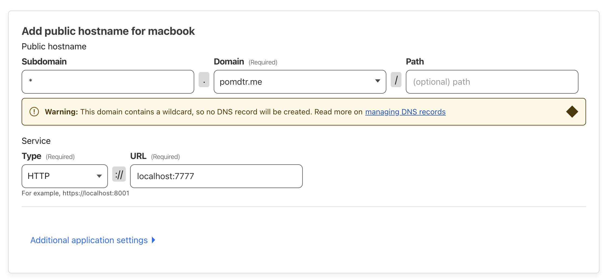

Cloudflare Tunnel is a free service that allows you to expose your local server to the internet, without having to expose your local IP address.
Additionally, it provides some protection against DDoS attacks, and allows you to use Cloudflare's other services like Access.
Setup
-
Make sure that you have a domain name that you can manage with Cloudflare.
-
Install smallweb on your server, and register it as a service.
// install deno curl -fsSL https://deno.land/install.sh | sh // install smallweb curl -sSfL https://install.smallweb.run | sh // register smallweb as a service smallweb service install // make sure that the server service is running smallweb service status -
Set the
domainfield in your smallweb config to your domain name.
# open the smallweb config in your default editor
smallweb config
-
From your cloudflare dashboard, navigate to
Zero Trust > Networks > Tunnels -
Click on
Create a tunnel, and select theClouflaredoption -
Follow the intructions to install cloudflared, and create a connector on your device.
-
Add a wildcard hostname for your tunnel (ex:
*.<your-domain>), and usehttp://localhost:7777as the origin service.
-
Do the same for your apex domain, if you want to manage it using smallweb.
-
Copy the tunnel ID, and go to
Websites > DNS > Records. -
Add a new
CNAMErecord for your wildcard hostname, with a target of<tunnel-id>.cfargotunnel.com.

Checking that your tunnel is running
Create a dummy smallweb app in ~/smallweb/example
mkdir -p ~/smallweb/example
CAT <<EOF > ~/smallweb/example/main.ts
export default {
fetch() {
return new Response("Smallweb is running", {
headers: {
"Content-Type": "text/plain",
},
});
}
}
EOF
If everything went well, you should be able to access https://example.<your-domain> in your browser, and see the message Smallweb is running.
Optional Steps
- You can protect your tunnel (or specific apps) with Cloudflare Access.